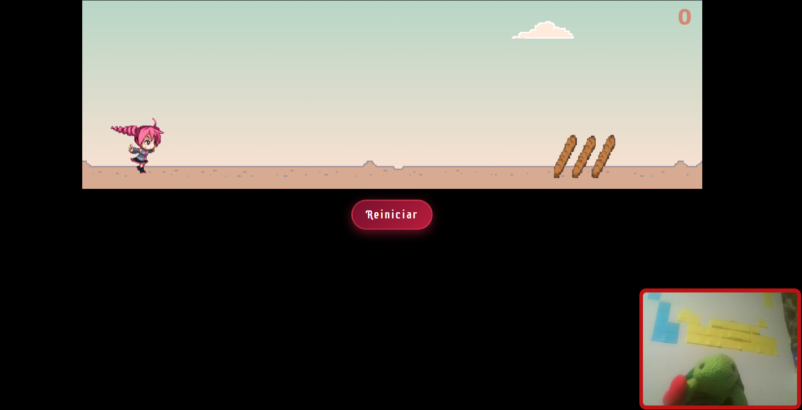
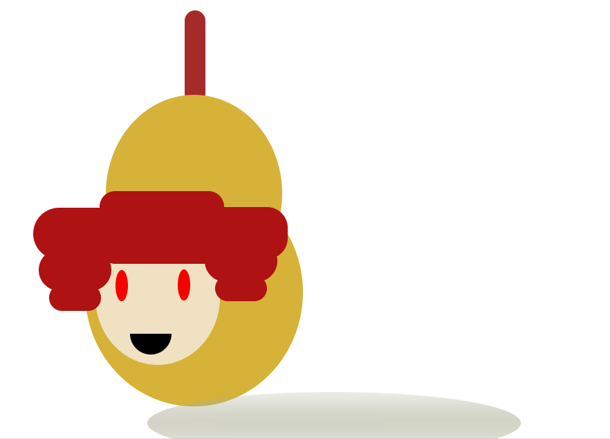

Teto corriendo con camara en mano
Inspirado en el juego del dinosaurio de Chrome, es una kasane teto corriendo por los baguettes y aparte de ello, tienes que hacerlo por teclado o atraves de la camara web
Hecho en HTML,CSS,JS y Mediapipe web para reconocimiento de gestos

Descargador de videos de YouTube
Un programa sencillo utilizando la libreria de pytubefix para descargar los videos de YouTube.
Hecho en Python
Teto hecha en CSS
Un dibujo muy sencillo utilizando solo HTML Y CSS
Hecho en HTML Y CSS

Mapa personalizado
Utilizando openstreetmap y leaflet "Una bibliteca de JS para agregar dinamismo a los mapas", para poner puntos de mi gusto y que quiero ver en un mapa
Hecho en HTML,CSS y JS

Tinder de imagenes
Practicamente se hace un like o no a una serie de imagnes que se tienen en la plataforma de danboru